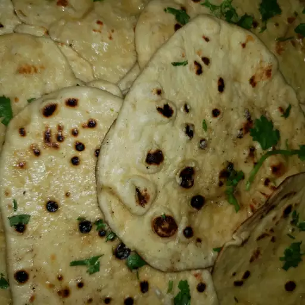

Naan

Description
This homemade naan recipe makes soft, chewy naan with a buttery taste. It is the best i have tasted outside of an Indian restaurant. Simply dekucuiys eateb warn brushed with melted butter or served with your favorite curry.
Ingredients
- 1(.25 ounce) package active dry yeast
- 1 cup warm water
- 1/4 cup white sugar
- 3 tablespoons milk
- 1 large egg. beaten
- 2 teaspoon salt
- 4 and 1/2 cups bread flour
- 2 teaspoons miced garlic(Optional)
- 1/4 cup butter, melted
Steps
- Disolve yeast in warm water in a large vowl. Let stand about 10 minutes, until frothy.
- Meanwhile, generously oil a large bowl.
- Stir sugar, milk, egg, and salt into the yeast mixture. Mix in enough flour to make a soft dough.
- Knead dough on a lightly floured surface until smooth, 6 to 8 minutes.
- Place dough in the prepared oil, cover with a damp cloth, and let rise until doubled in size, about 1 hour.
- Pinch down dough on lightly floured surface, and knead in garlic. Pinch off small handfuls of dough about the size of a gold ball; you should have about 14. Roll each piece itno a ball and place on a tray. Cover with a towel, and allow to rise utnil doubled in size, about 30 minutes.
- Meanwhile, preheat a large grill pan over high heat.
- Roll each piece of dough into a thin circle.
- Brush some melted butter on the preheated grill pan. Place a few pieces of dough in the pan (as many as you can fit) and cook until puffy and lightly browned, 2 to 4 more minutes. Remove from the grill and repeat to cook the remaining naan.
return to homepage